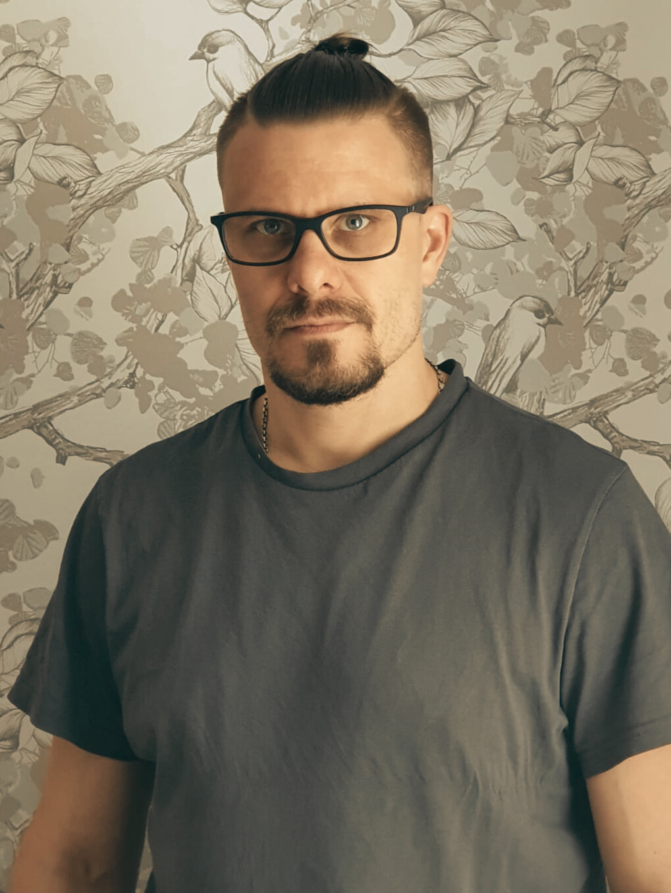
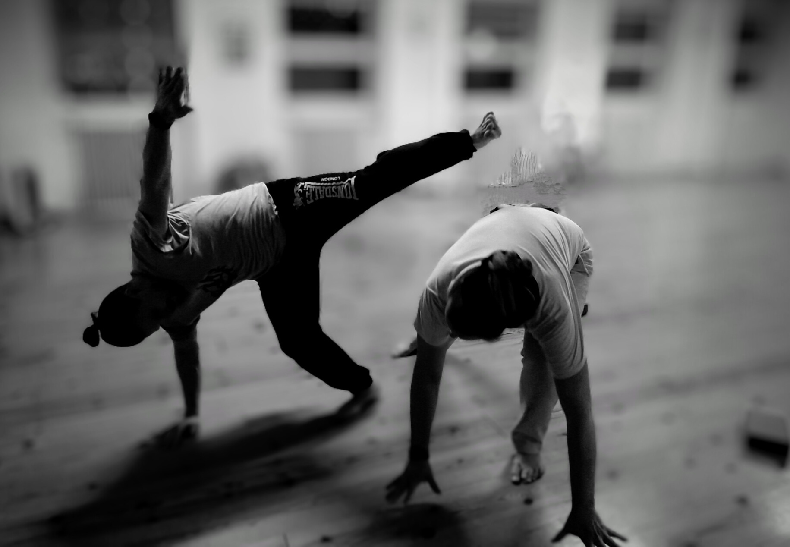

Tietoa minusta

Olen Jarno Saarinen, tieto- ja viestintätekniikan opiskelija POKE:lla Äänekoskella. Olen alanvaihtaja, jolla on takana 25 vuoden ura rakennus- ja maalausalalla.
Pitkä kokemus käytännön työelämästä on opettanut minulle tarkkuutta, ongelmanratkaisukykyä ja periksiantamattomuutta. Nyt sovellan näitä taitoja koodauksen ja IT-ratkaisujen parissa.
Vapaa-ajalla ja harrastuksissa minulle on tärkeää ymmärtää, miten asiat toimivat pellin alla. Viihdyn käsillä tekemisen parissa, oli kyse sitten autojen huoltamisesta, maalaamisesta, 3D-tulostamisesta tai elektroniikkaprojekteista – viimeisimpänä rakensin pojalleni ajosimulaattorin. Tietotekniikka on läsnä myös vapaa-ajalla ja 3D-mallinnuksen (Blender, Freecad) opettelun muodossa.
Vastapainoa koneella istumiselle tuovat capoeira ja omatoiminen kuntoilu. Rentoudun musiikin, elokuvien, videopelien, äänikirjojen ja podcastien parissa.

Työnäytteet ja toteutukset
Toteuttamiani verkkosivustoja ja asiakasprojekteja.
Jyväskylän Hyvän olon pisteen verkkosivuston kokonaisvaltainen uudistus (2025) sekä ylläpito.
Siirry sivustolle hyvänolonpiste.fiGraafinen suunnittelu: Mainosmateriaalien toteutus Hyvän olon pisteelle (Canva).
Osaaminen
- HTML
- CSS
- JavaScript
- Git ja GitHub
- WordPress
- VS Code
- Canva
- FreeCAD
- Blender (Alkeet)
- Unity (Alkeet)
- 3D-tulostus & mallinnus
Projektit
Kahden näytön telineen 3D-malli, joka on suunniteltu FreeCADilla ja 3D-tulostettu. Malli on lisäksi viety Unity AR:n avulla älypuhelimeen tarkasteltavaksi.
Varaosahammasrattaan mallintaminen Toshiba-videonauhuriin ja osan 3D-tulostaminen.
Yhteystiedot
Kiinnostuitko osaamisestani? Ota rohkeasti yhteyttä sähköpostitse tai verkostoidu LinkedInissä.